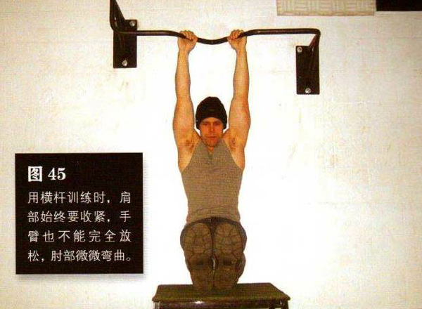
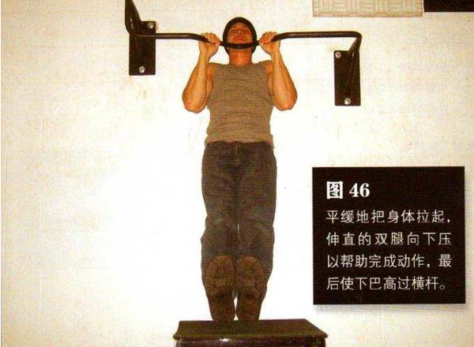

练习折刀引体向上需要高一点的横杆，横杆下面放一把高脚凳或类似物体。向上跳起抓住横杆，手臂大约与肩同宽，采取正握姿势。用横杆训练时，肩部始终要收紧（参见第 107页），手臂也不能完全放松，肘部微微弯曲。将双腿向上摆，把双脚脚跟搭在横杆前方的高脚凳上，双腿要完全伸直。该物体要足够高，理想情况是双腿伸直时脚踩与骨盆恰好在同一高度，此即经典的折刀角度
然后平缓地把身体拉起，伸直的双腿向下压以帮助完成动作，最后使下巴高过横杆。这是该动作的结束姿势（图 46）。暂停一下，然后降低身体，在肌肉的完全控制下回到起始姿势
初级标准：1 组，10 次
中级标准：2 组，各 15 次
高级标准：3 组，各 20 次